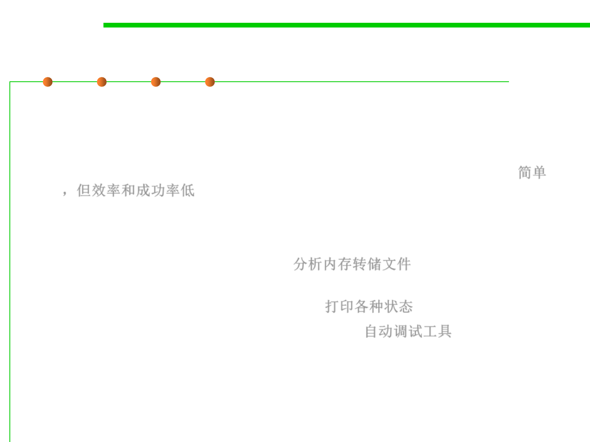

Debugging by Brute Force
7.4 Debugging
▪ The most common scheme for debugging a program is the “brute
force” method.
– It is popular because it requires little thought and is the least mentally
taxing of the methods, but it is inefficient and generally unsuccessful. 简单
，但效率和成功率低
▪ Brute force methods can be partitioned into at least three
categories:
– Debugging with a memory dump. 分析内存转储文件
– Debugging according to the common suggestion to “scatter print
statements throughout your program.” 打印各种状态
– Debugging with automated debugging tools. 自动调试工具